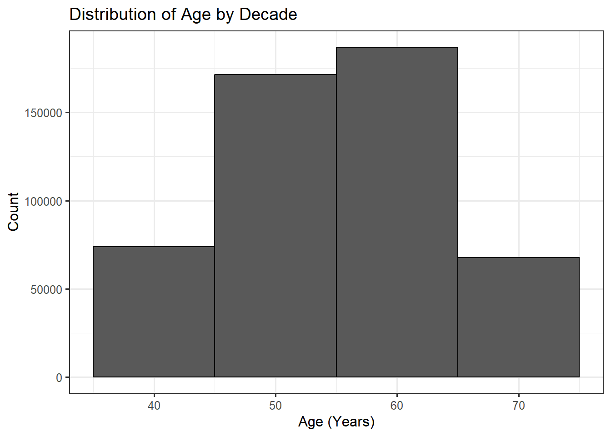
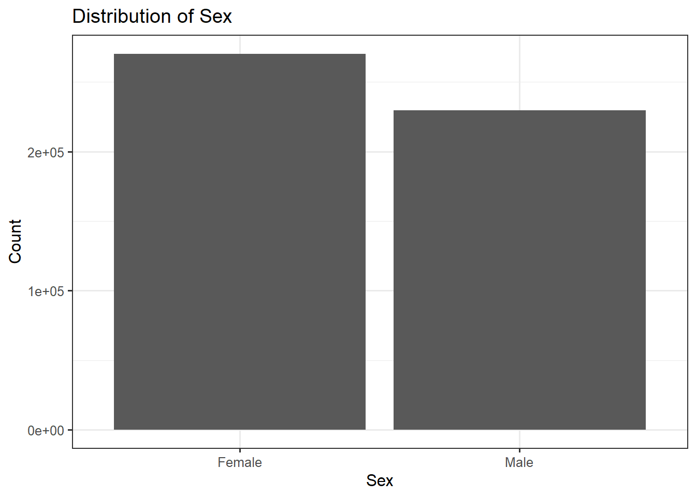
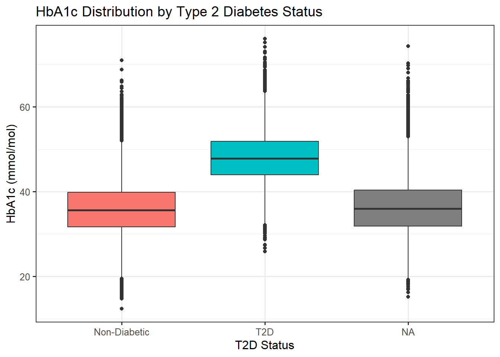

# Install the {tidyverse} library (if not already installed)
if (! "tidyverse" %in% installed.packages()) install.packages("tidyverse")
# Load the {tidyverse} library so the functions are available.
library(tidyverse)1 Introduction
This workshop introduces fundamental concepts in epidemiology and statistical analysis using R, focused on health data science. You will learn how to load a text file into R—a commonly used, open source, highly versatile data science program—and perform introductory epidemiological analyses. You will learn how to perform and interpret regression models to estimate associations, including adjusting for confounders.
We’ll use data similar to the UK Biobank, a large 500,000-person cohort that has transformed health data science in recent years (www.ukbiobank.ac.uk). The scale and depth of the data—including genetics, health records, and deep phenotyping—having provided many insights into mechanisms and predictors of health outcomes. The data is synthetic to protect participant anonymity, though it is designed to resemble real UK Biobank data.
You can find a free “R for Data Science” online book (https://r4ds.hadley.nz/) on how to do data science with R—from the introductory to the advanced.
You can find a free “Epidemiology for the uninitiated” online book (www.bmj.com/about-bmj/resources-readers/publications/epidemiology-uninitiated, which includes definitions, study design, sources of bias, and more.
2 Setup
2.1 R
R is a free, open-source environment for statistical computing, data analysis, and graphics, popular in academia and industry for its powerful tools, extensive packages, and data visualization capabilities.
To install R visit the R Project for Statistical Computing website.
2.2 RStudio
R is a command line tool without a graphical interface. If you wish to use one, I recommend RStudio. It is a desktop environment that allows you to edit and run scripts, see your loaded objects, access the R help manuals, and more, in one environment.
To install RStudio visit the posit.co website.
2.3 tidyverse
We’ll use functions from the {tidyverse} suite of packages designed for data science. All packages share an underlying design philosophy, grammar, and data structures, providing a comprehensive set of tools for data manipulation, analysis, and visualisation.
3 Data Loading and Inspection
This initial step is crucial to ensure the data is imported correctly and that we understand its structure.
3.1 Load the UK Biobank Baseline Assessment Data
This is a simulated dataset designed to look like the real UK Biobank data (data types, ranges, and approximate correlation structure), but is synthetic to preserve participant anonymity.
You can download the data to your local machine from here lcpilling.github.io/ukb_intro/ukb_baseline.tsv.gz.
# update path to stored location of the data file
ukb <- read_tsv("ukb_baseline.tsv.gz")
# or load directly from the internet
#ukb <- read_tsv("https://lcpilling.github.io/ukb_intro/ukb_baseline.tsv.gz")3.2 Inspecting the Data
We inspect the data’s dimensions, preview the first few rows, and check the variable types—these are shown at the top of the preview table (chr=character string, dbl=numeric).
# Check dimensions (rows and columns)
dim(ukb)View output
[1] 500000 13# Preview the first 6 rows
head(ukb)View output
# A tibble: 6 × 13
eid assessment_date age sex bmi current_smoker ldl hba1c systolic_bp chd_prevalent chd_incident
<chr> <date> <dbl> <dbl> <dbl> <dbl> <dbl> <dbl> <dbl> <dbl> <dbl>
1 x100001 2010-07-28 61 1 28.4 0 3.55 43.3 192. 0 1
2 x100002 2010-09-07 51 0 28.0 0 3.05 33.4 143. 0 0
3 x100003 2007-06-07 49 1 29.3 0 3.72 35.6 128. 0 0
4 x100004 2010-02-24 51 1 24.8 0 2.72 34.8 152. 0 0
5 x100005 2009-03-17 57 1 31.3 0 3.34 37.3 162. 0 0
6 x100006 2008-08-05 42 0 33.9 0 3.85 30.1 156. 0 0
t2d_prevalent t2d_incident
<dbl> <dbl>
1 0 0
2 0 0
3 0 0
4 0 0
5 0 1
6 0 04 Univariate Summary and Visualisation
We’ll focus on some key variables in this tutorial: age, sex, bmi (Body Mass Index), and hba1c (HbA1c, Glycated hemoglobin).
Feel free to explore the others as you go along.
4.1 Summary Information
Get summary of numeric variables.
ukb |>
select(age, sex, bmi, hba1c) |>
summary()View output
age sex bmi hba1c
Min. :40.00 Min. :0.0000 Min. :11.36 Min. :12.40
1st Qu.:49.00 1st Qu.:0.0000 1st Qu.:23.90 1st Qu.:31.86
Median :56.00 Median :0.0000 Median :26.86 Median :35.90
Mean :55.45 Mean :0.4592 Mean :27.25 Mean :36.31
3rd Qu.:62.00 3rd Qu.:1.0000 3rd Qu.:30.16 3rd Qu.:40.32
Max. :69.00 Max. :1.0000 Max. :61.96 Max. :76.07
NA's :12576 Note that we are used the |> “pipe operator” to pipe the output of one function to the next, rather than using nested function calls.
We “selected” the variables we wanted from the dataset ukb and passed them to be summarized.
The equivalent “base R” solution (not using the pipe or the tidyverse select() function) would be:
summary(ukb[,c("age","sex","bmi","hba1c")])View output
age sex bmi hba1c
Min. :40.00 Min. :0.0000 Min. :11.36 Min. :12.40
1st Qu.:49.00 1st Qu.:0.0000 1st Qu.:23.90 1st Qu.:31.86
Median :56.00 Median :0.0000 Median :26.86 Median :35.90
Mean :55.45 Mean :0.4592 Mean :27.25 Mean :36.31
3rd Qu.:62.00 3rd Qu.:1.0000 3rd Qu.:30.16 3rd Qu.:40.32
Max. :69.00 Max. :1.0000 Max. :61.96 Max. :76.07
NA's :12576 Both provided the same output, but the first is much more human readable, so we will follow this format throughout this workshop.
summary() has provided us a lot of useful information about the four phenotypes. What can you learn from the above?
4.2 Tabulate
Categorical variables such as “sex” and “t2d” can be tabulated, which is more informative that the summary above.
table(ukb$sex)View output
0 1
270404 229596 Note that here, we have accessed a single variable in the ukb data frame using the $ symbol. This base R option can sometimes be simpler than using select().
4.3 Visualisation
We use histograms for continuous variables to show the distribution and bar charts for categorical variables.
Here, we will use the tidyverse ggplot() function to specify the data we will use, then specify the plot type (with geom_*) and options. See the “Visualize” section of the R for Data Science book for detail on this versatile gg “grammar of graphics” approach.
# Age Histogram
ukb |>
ggplot(aes(x = age)) +
geom_histogram(binwidth = 10, colour = "black") +
labs(title = "Distribution of Age by Decade", x = "Age (Years)", y = "Count")View output

# Sex Bar Chart
ukb |>
# make a new variable using `mutate()` to pass text labels to ggplot
mutate(Sex = factor(sex, levels = c(0, 1), labels = c("Female", "Male"))) |>
ggplot(aes(x = Sex)) +
geom_bar() +
labs(title = "Distribution of Sex", x = "Sex", y = "Count")View output

5 Linear Regression
Let’s hypothesise that BMI differs between males and females.
First, we can simply compare the mean BMI between the sexes.
ukb |>
group_by(sex) |>
summarise(
mean_bmi = mean(bmi, na.rm = TRUE),
sd_bmi = sd(bmi, na.rm = TRUE),
n_group = n()
)View output
# A tibble: 2 × 4
sex mean_bmi sd_bmi n_group
<dbl> <dbl> <dbl> <int>
1 0 26.8 4.72 270404
2 1 27.8 4.70 229596We see the mean (average) is different, but is this statistically significant? Is it confounded by different ages between the males and females?
5.1 Linear Regression Model
We model BMI (Outcome) with a single predictor variable: sex.
# Linear Model (lm): BMI ~ Sex
lm_model <- lm(bmi ~ sex, data = ukb)
# Summarise the model results
summary(lm_model)View output
Call:
lm(formula = bmi ~ sex, data = ukb)
Residuals:
Min 1Q Median 3Q Max
-15.451 -3.331 -0.391 2.899 34.203
Coefficients:
Estimate Std. Error t value Pr(>|t|)
(Intercept) 26.811282 0.009171 2923.48 <2e-16 ***
sex 0.945650 0.013536 69.86 <2e-16 ***
---
Signif. codes: 0 '***' 0.001 '**' 0.01 '*' 0.05 '.' 0.1 ' ' 1
Residual standard error: 4.709 on 487422 degrees of freedom
(12576 observations deleted due to missingness)
Multiple R-squared: 0.009913, Adjusted R-squared: 0.009911
F-statistic: 4880 on 1 and 487422 DF, p-value: < 2.2e-16Interpretation
Coefficient (Estimate): For sex, it is the estimated difference in mean BMI between that males and females (the reference group).
P-value (Pr(>|t|)): If this value is small (e.g., <0.05), we conclude the predictor is statistically significantly associated with the outcome.
5.2 Linear Regression Model with Covariates
The above model does not account for any additional factors. Yet, age is a classic confounder: it is associated with BMI, and in UK Biobank males and females have different mean age at assessment (females slightly younger).
We can add age to the model, to see whether this changes the estimates.
We model BMI (Outcome) as a function of age and sex (Predictors).
# Linear Model (lm): BMI ~ Age + Sex
lm_model_adjusted <- lm(bmi ~ age + sex, data = ukb)
# Summarise the model results
summary(lm_model_adjusted)View output
Call:
lm(formula = bmi ~ age + sex, data = ukb)
Residuals:
Min 1Q Median 3Q Max
-15.391 -3.328 -0.392 2.893 34.492
Coefficients:
Estimate Std. Error t value Pr(>|t|)
(Intercept) 2.535e+01 4.633e-02 547.24 <2e-16 ***
age 2.648e-02 8.248e-04 32.10 <2e-16 ***
sex 9.232e-01 1.354e-02 68.19 <2e-16 ***
---
Signif. codes: 0 '***' 0.001 '**' 0.01 '*' 0.05 '.' 0.1 ' ' 1
Residual standard error: 4.704 on 487421 degrees of freedom
(12576 observations deleted due to missingness)
Multiple R-squared: 0.012, Adjusted R-squared: 0.012
F-statistic: 2961 on 2 and 487421 DF, p-value: < 2.2e-16Interpretation
- Coefficient (Estimate): For age, this is the estimated change in mean BMI for a one-year increase in age, holding sex constant. For sex, it is the estimated difference in mean BMI between that males and females (the reference group), holding age constant
Conclusion: Males have higher BMI compared to females, in linear regression models adjusted for age. Whilst adjusting for age attenuated the estimate slightly, there is still a highly significant association.
5.3 Confidence Intervals (CI)
The coefficient is the best estimate of the relationship, yet there is uncertainty in the model. The 95% Confidence Intervals are the range of likely values for the true relationship. Put another way, we are 95% sure the true estimate lines between these values.
We can calculate the 95% Confidence Intervals (or CIs) for the coefficients using the Standard Error outputted by the model:
# first extract the model estimates into a data frame
results <- lm_model_adjusted |> summary() |> coef() |> as.data.frame()
# add variables for the confidence intervals
results$CI_lower <- results$Estimate - (results$`Std. Error` * 1.96)
results$CI_upper <- results$Estimate + (results$`Std. Error` * 1.96)
resultsView output
Estimate Std. Error t value Pr(>|t|) CI_lower CI_upper
(Intercept) 25.35351691 0.0463296218 547.24204 0.00000e+00 25.26271086 25.44432297
age 0.02647586 0.0008248214 32.09890 7.87475e-226 0.02485921 0.02809251
sex 0.92322721 0.0135401175 68.18458 0.00000e+00 0.89668858 0.94976584Though in the first table we got the central estimate (the coefficient), here we see the range of estimates are we 95% confident the true estimate lies between.
(Note that R rounds values <1*10-324 to 0)
Conclusion: Males have 0.92 units higher BMI compared to females (95% CI 0.90 to 0.95, p<1*10-324), in linear regression models adjusted for age.
6 Creating a new binary variable
This demonstrates data stratification based on clinical thresholds.
6.1 Identifying “Obese” Participants
We create a new binary variable obese where [1] indicates BMI > 30 kg/m2 and [0] otherwise.
ukb <- ukb |>
mutate(obese = if_else(bmi > 30, 1, 0))
# Tabulate new variable
table(ukb$obese)View output
0 1
360884 126540 6.2 Comparing Mean HbA1c
We can compare HbA1c (Glycated haemoglobin, a measure of blood glucose) between the obese and non-obese groups.
ukb |>
group_by(obese) |>
summarise(
mean_hba1c = mean(hba1c, na.rm = TRUE),
sd_hba1c = sd(hba1c, na.rm = TRUE),
n_group = n()
)View output
# A tibble: 3 × 4
obese mean_hba1c sd_hba1c n_group
<dbl> <dbl> <dbl> <int>
1 0 35.6 6.26 360884
2 1 38.4 6.27 126540
3 NA 36.3 6.34 12576Note: “NA” means missing. Not all participants will have data on every phenotype. NAs here show the group with HbA1c but not BMI.
7 Logistic Regression
This introduces modelling a binary outcome, essential for predicting disease risk.
7.1 Logistic Regression Model
Let’s use our above hypothesis as the example: we hypothesise that HbA1c differs between the obese and non-obese groups.
We model the odds of being obese (Binary Outcome) as a function of age, sex, and hba1c
# Generalised Linear Model (glm) with family="binomial"
logistic_model <- glm(obese ~ age + sex + hba1c,
data = ukb,
family = "binomial")
summary(logistic_model)View output
Call:
glm(formula = obese ~ age + sex + hba1c, family = "binomial",
data = ukb)
Coefficients:
Estimate Std. Error z value Pr(>|z|)
(Intercept) -3.5847204 0.0279176 -128.404 <2e-16 ***
age -0.0009885 0.0004163 -2.374 0.0176 *
sex 0.2331410 0.0066901 34.849 <2e-16 ***
hba1c 0.0671336 0.0005360 125.240 <2e-16 ***
---
Signif. codes: 0 '***' 0.001 '**' 0.01 '*' 0.05 '.' 0.1 ' ' 1
(Dispersion parameter for binomial family taken to be 1)
Null deviance: 558245 on 487423 degrees of freedom
Residual deviance: 539329 on 487420 degrees of freedom
(12576 observations deleted due to missingness)
AIC: 539337
Number of Fisher Scoring iterations: 4The model coefficients are in terms of log-odds. To interpret them as Odds Ratios (OR), we must exponentiate them.
result2 <- logistic_model |> summary() |> coef() |> as.data.frame()
result2$OR <- exp(result2[,"Estimate"])
result2$CI_lower <- exp(result2$Estimate - (result2$`Std. Error` * 1.96))
result2$CI_upper <- exp(result2$Estimate + (result2$`Std. Error` * 1.96))
result2View output
Estimate Std. Error z value Pr(>|z|) OR CI_lower CI_upper
(Intercept) -3.5847204270 0.0279176194 -128.403514 0.000000e+00 0.02774442 0.02626708 0.02930486
age -0.0009885032 0.0004163070 -2.374457 1.757476e-02 0.99901199 0.99819716 0.99982747
sex 0.2331409838 0.0066900652 34.848836 4.434073e-266 1.26255947 1.24611219 1.27922383
hba1c 0.0671335561 0.0005360386 125.240144 0.000000e+00 1.06943830 1.06831530 1.07056248Odds Ratio (OR): This represents the factor change in the odds of the outcome (being obese) for a one-unit increase in the predictor. For example, an OR for hba1c of 1.10 means that for every 1 unit increase in HbA1c, the odds of being obese increase by 10%, holding all other factors constant.
Conclusion: For each unit increase in HbA1c, the odds of being obese increase by 6.9% (OR 1.069, 95% CIs 1.068 to 1.070, p<1*10-324), in logistic regression models adjusted for age and sex.
8 Another Example of Confounding
In this example, we will test the hypothesis that smokers have higher likelihood of having Coronary Heart Disease (CHD).
table(ukb$chd_prevalent)View output
0 1
438727 24458 # Logistic regression for CHD ~ Smoking
chd_unadjusted_model <- glm(chd_prevalent ~ current_smoker,
data = ukb,
family = "binomial")
# Get and print the unadjusted estimates
coef(summary(chd_unadjusted_model))View output
Estimate Std. Error z value Pr(>|z|)
(Intercept) -2.89038961 0.006960765 -415.240208 0.0000000
current_smoker 0.03219289 0.021067964 1.528049 0.1265003Yes, the current smokers have higher CHD rates. But is this confounded by age? Age is a classic confounder: it may be associated with smoking (smoking rates may differ in older participants) and is a strong independent risk factor for CHD.
We now add age to the model to see how it affects the estimated relationship between smoking and CHD.
# Logistic regression for CHD ~ Smoking + Age
chd_adjusted_model <- glm(chd_prevalent ~ current_smoker + age,
data = ukb,
family = "binomial")
# Get and print the unadjusted Odds Ratio for current_smoker
coef(summary(chd_adjusted_model))View output
Estimate Std. Error z value Pr(>|z|)
(Intercept) -7.94263669 0.0571785348 -138.9094 0.000000e+00
current_smoker 0.25366921 0.0214564762 11.8225 2.986582e-32
age 0.08688796 0.0009406972 92.3655 0.000000e+00# Compare Odds Ratios:
print(str_c("Unadjusted OR = ", round(exp(coef(chd_unadjusted_model)["current_smoker"]),2)))View output
[1] "Unadjusted OR = 1.03"print(str_c("Adjusted OR = ", round(exp(coef(chd_adjusted_model)["current_smoker"]),2)))View output
[1] "Adjusted OR = 1.29"Curious! The finding that the association between smoking and Coronary Heart Disease (CHD) gets stronger (the Odds Ratio moves further away from 1) after you adjust for age means that age was previously masking or suppressing the true, independent effect of smoking.
Confounding occurs when a third variable (the confounder, Age in this case) is associated with both the exposure (Smoking) and the outcome (CHD), but is not in the causal pathway between them.
For age to be a negative confounder (or suppressor) in the smoking-CHD relationship, two specific associations must be true:
Age is strongly associated with the Outcome (CHD): This is universally true; older people have a much higher risk of CHD (Positive Association: Age↑ → CHD Risk↑).
Age is inversely associated with the Exposure (Smoking): This is the key. In our synthetic UK Biobank data, older participants are less likely to be current smokers than younger participants (Age↑ → Smoking↓).
This part of the workshop is designed to highlight the importance of thinking of the plausibility of results that you see. It is actually true that older UK Biobank participants are less likely to be current smokers (though, they are more likely to be former smokers), or it could have been a data or coding error.
9 Hypothesis Testing: T2D and HbA1c
Next, we test a direct clinical hypothesis regarding Type 2 Diabetes (t2d) status and HbA1c (a measure of average blood glucose).
# N UK Biobank participants with type-2 diabetes at baseline
table(ukb$t2d_prevalent)View output
0 1
446884 16301 # Logistic regression model
logistic_model <- glm(t2d_prevalent ~ age + sex + hba1c,
data = ukb,
family = "binomial")
summary(logistic_model)View output
Call:
glm(formula = t2d_prevalent ~ age + sex + hba1c, family = "binomial",
data = ukb)
Coefficients:
Estimate Std. Error z value Pr(>|z|)
(Intercept) -19.104888 0.113124 -168.88 <2e-16 ***
age 0.045735 0.001270 36.01 <2e-16 ***
sex 0.662573 0.019444 34.08 <2e-16 ***
hba1c 0.304960 0.001769 172.38 <2e-16 ***
---
Signif. codes: 0 '***' 0.001 '**' 0.01 '*' 0.05 '.' 0.1 ' ' 1
(Dispersion parameter for binomial family taken to be 1)
Null deviance: 141137 on 463184 degrees of freedom
Residual deviance: 86075 on 463181 degrees of freedom
(36815 observations deleted due to missingness)
AIC: 86083
Number of Fisher Scoring iterations: 8exp(coef(logistic_model))View output
(Intercept) age sex hba1c
5.044902e-09 1.046797e+00 1.939777e+00 1.356571e+00 You should see that all our phenotype included on the “right” of the regression formula are strongly and independently associated with type-2 diabetes status.
9.1 Visualisation
A boxplot is a useful visualisation to see difference in means across groups.
ukb |>
# Ensure T2D status is labelled clearly on the plot
mutate(t2d_group = factor(t2d_prevalent, levels = c(0, 1), labels = c("Non-Diabetic", "T2D"))) |>
ggplot(aes(x = t2d_group, y = hba1c, fill = t2d_group)) +
geom_boxplot() +
labs(
title = "HbA1c Distribution by Type 2 Diabetes Status",
x = "T2D Status",
y = "HbA1c (mmol/mol)"
) +
theme(legend.position = "none")View output

10 Summary
In this workshop you have loaded and inspected a large human cohort, tested hypotheses using regression models, adjusted for potential confounders, and begun to explore methods for visualisation.
10.1 Bonus tasks
Repeat the investigations for the “systolic_bp” variable, which corresponds to measured Systolic Blood Pressure.
Try to find out:
- What is the average (mean) systolic BP? Does the range of values seem realistic?
- Does the distribution on the histogram look approximately Gaussian (“normal”)?
- Test associations with age and sex. What are the associations?
- Create a binary variable “hypertension” where participants with
systolic_bp >= 140are defined as cases. How many are there? - What is the association between hypertension and age and sex?
- What is the association between hypertension and prevalent Coronary Heart Disease (chd_prevalent)?
Explore associations between baseline risk factors and incident disease variables.